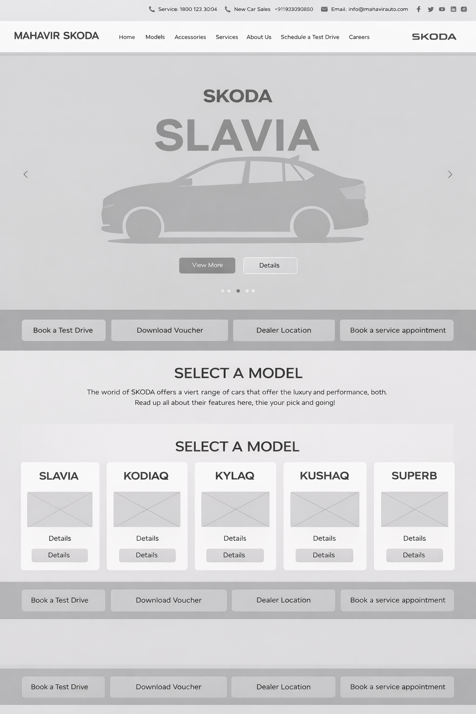
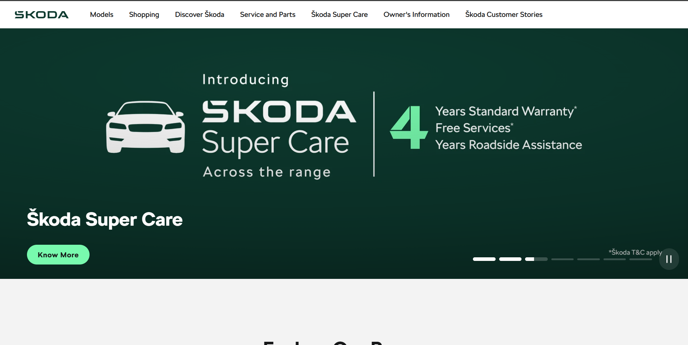
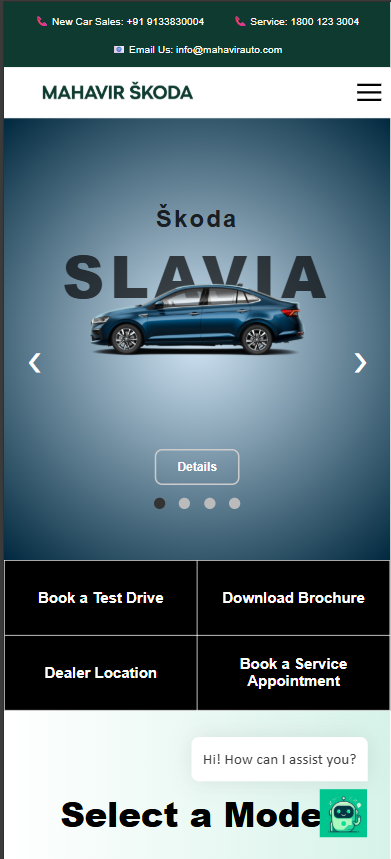

Mahavir Skoda is the primary dealer representative of Škoda India across Andhra Pradesh and Telangana, representing European automotive refinement and engineering. The dealer showroom is highly regarded for providing high-touch customer consultations.
We were tasked with modernizing the dealer's digital flagship experience, aligning it with Škoda's global refined "Simply Clever" brand philosophy while structurally optimizing the regional sales funnel. The objective was to create an interface that simplifies vehicle specification analysis and streamlines test-drive scheduling leads.
Bridging corporate brand visual compliance with dealer-level commercial lead requirements presented complex UX barriers:
- Spec-Sheet Information Overwhelm: Dealership catalogs were cluttered with heavy technical specifications, making it difficult for buyers to compare trims easily.
- Booking Friction Drop-offs: Scheduling a physical test drive required completing a long 6-step form, creating massive friction during high-intent browsing.
- Inelastic Responsive Grids: Over 80% of automotive exploration happens on mobile phones, yet the dealer's legacy site did not support fluid side-by-side spec comparison.
- Fragmented After-Sales Transparency: Authorized maintenance details and accessories costing were hidden under dense tables, prompting users to bounce.
We initiated the project by carrying out user interviews with recent vehicle buyers and Škoda loyalists to identify their top conversion trust metrics. Safety certifications (e.g., 5-Star Global NCAP), cabin refinement parameters, and local dealership service transparency were highlighted as key decision factors.
In parallel, we performed a thorough Jakob Nielsen heuristic audit of major regional dealer platforms. Our findings confirmed that convoluted leads collection scripts and unclear trim layouts accounted for the majority of drop-offs.
Key Discovery Takeaways
- Safety Front & Center: Buyers want safety ratings and build quality specs visible instantly, not hidden in long PDFs.
- Low-Friction Lead Forms: Simplifying test-drive booking into a fast, 3-step calendar scheduler significantly raises conversions.
- Transparent After-Sales Pricing: Providing instant service estimate calculators builds local dealer trust.
- Adaptive Comparison Tables: Mobile screens require horizontal swiping specification columns instead of traditional stacked text sheets.

We established a design framework that unites Škoda's signature branding with localized conversion hooks. We defined five core visual and structural guidelines:
- Anthracite & Emerald Green Brand Guidelines: Infusing global Škoda branding (deep premium green highlights, anthracite blocks, and silver grids) into a luxurious neutral canvas.
- Virtual Showroom Fahrzeug-Navigation: Categorizing models cleanly into Sedans, SUVs, and Electric vehicles for fast model comparisons.
- 3-Step Test-Drive Funnel: Restructuring the 6-step form into a quick, interactive modal scheduler with predefined date slots.
- Transparent Maintenance Calculators: Helping owners estimate maintenance costs instantly.
- Mobile-First Spec Sheets: Engineering touch-swipe controls to compare engine outputs, safety credentials, and feature trims smoothly.
We designed a highly geometric typographical system, utilizing Cormorant Garamond serif headers to evoke Škoda's rich heritage dating back to 1895, contrasted with Space Grotesk labels for an engineered, precise aesthetic.
We mapped structural layouts, vehicle detail models, booking confirmation funnels, and localization details in interactive wireframes before high-fidelity visual composition.
We ran two iterative usability testing cycles with prospective car buyers to refine transaction mechanics:
- Calendar Confusion: Users were unsure which dates were available. We introduced predefined calendar pills representing popular slots to streamline booking.
- Model Trims Clutter: Comparing variants was taxing. We streamlined trims specs lists into simple side-by-side columns with clean filters.
- Location Friction: Dealers list details were disorganized. We introduced single-tap direct calling and visual Google Map shortcuts.
Premium Digital Showroom
We redesigned the showroom landing page to function as a visual gallery. Vehicles are displayed in high-resolution studio shots with custom glassmorphic overlay specifications, allowing users to analyze key performance metrics immediately.

Interactive Model Explorer
A simplified specifications table allowing buyers to evaluate and compare various trims (Active, Ambition, Style, L&K) side-by-side. Specs elements scale fluidly to secure full legibility on wide desktop screens.

Ergonomic Mobile Catalog
Since 80%+ automotive buyers browse dealerships on mobile viewports, we built mobile-optimized specifications cards, floating quick-call drawers, and persistent test-drive scheduling tabs for easy tap navigation.

Conclusion
By modernizing a legacy automotive dealer portal into a high-converting flagship showroom, we bridged Škoda's European brand prestige with highly optimized local lead generation funnels. Stripping out booking friction and exposing transparent specifications built a trustworthy online dealership environment.
What did we achieve from the project?
The dealership redesign delivered immediate positive performance and business growth metrics:
- +35% Test-Drive Bookings Reducing the calendar booking funnel from 6 steps to 3 quick steps dramatically lowered lead drop-offs.
- +45% Mobile Variant Engagement Responsive model swipers allowed mobile users to compare engine displacements and trim specs easily.
- -25% Service Estimate Bounce Transparent, authorization-backed maintenance calculator pages successfully retained current car owners.